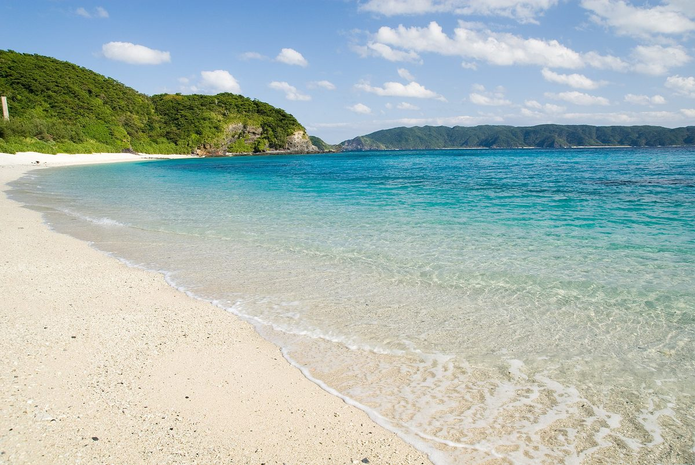
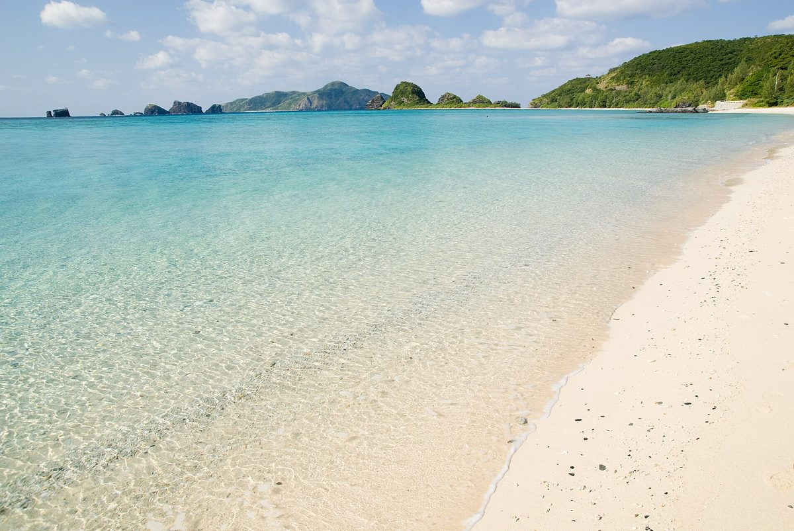

那霸搭高速船 50–70 分鐘，海的顏色就完全換了一個世界——在地人也只能用「慶良間藍」來形容。座間味、阿嘉這幾座小島，是我們帶朋友看海時最常去的地方。
票價為 2026-06 確認的參考值；旺季與颱風季請以官方公告為準。
部分連結為合作連結，不影響你的價格。詳見 免責聲明與合作揭露。
座位有限，旺季和週末很容易滿。先在官方網站訂好再排行程，會安心很多。颱風季（夏–秋）船班說停就停，出發前記得看一眼運航狀況。
當天來回也可以，但傍晚船一離開，沙灘就安靜下來了——那個時段的海，跟白天完全是兩回事。3 天 2 夜剛剛好。
12–3 月是座頭鯨的季節，賞鯨船從座間味出發。夏天的慶良間藍很有名，但冬天的慶良間，我們覺得更被低估。

船開不開、行程怎麼排、浮潛點怎麼選——之後可以直接敲我們（SNS 籌備中）。先看看我們想做的事。